文档 1.1 · 交易库视觉方案
交易库视觉设计方案 V1.1
本方案说明交易库 V1.1 如何组织实盘交易与模拟盘练习，以及用户如何查看统计、进入回合复盘并返回来源页面。当前定型方案为 E；正文覆盖页面结构、操作规则和验收要求，供设计与开发共同使用。
交易库沿用以下规范；本页补充交易库自身的页面与业务规则。
| 用途 | 权威来源 |
|---|---|
| 首页日期入口、交易库进入与返回 | V2.5 HP06 |
| 交易库 E 布局、条件、练习、统计与分镜 | 本 V1.1 正文 · 正式 E 原型 |
| 全站共享结构和控件基础 | V2.5 共享规范 HP08、视觉基础 HP11、全站原则 |
| 控件外观、状态与命中区 | V2.5 控件手册 |
| 跨页参数、范围重建与返回字段 | V2.5 入口状态约定 |
一、目标与取舍
交易库帮助用户查找和核对交易、理解交易结果，并进入具体回合完成复盘。为实现这一目标，设计分为以下三个方面。
查找和核对交易。 用户从首页日期入口或普通交易库入口进入后，能够看到已经生效的来源条件，并在实盘成交和模拟盘练习中定位需要核对的对象。
理解交易结果。 用户能够分别阅读实盘与模拟盘的列表和统计，按各自的日期口径理解结果，并区分已平仓回合、未平仓成交和缺失数据。
完成回合复盘。 用户能够从标的或练习进入回合集，再进入带有必要开仓上下文的回合复盘，完成后逐层返回并恢复来源位置和状态。
设计取舍
实盘和模拟盘复用列表、统计与详情的呈现方式，但分别保存条件和导航状态；从列表直接进入标的或练习回合集，保持进入、复盘、返回的短路径。这样可以复用稳定的页面结构，同时保留两种模式各自的业务口径和恢复状态。
范围与边界
V1.1 覆盖交易库的列表、统计、回合集、复盘进入和返回；公共视觉规范由 V2.5 维护。首页入口布局不在本章展开，详情容器不新增双栏，模拟盘不新增账户模型，相关边界在第二、三、八章说明。
二、布局与视觉规范
交易库的页面结构服务于条件确认、结果阅读、对象进入和返回恢复。布局沿用 V2.5 的公共表面、颜色、字体、间距、焦点和状态规则，具体区块职责如下。
| 区块 | 职责 |
|---|---|
| 顶栏 | 64px；仅显示“交易库”标题，不显示来源、返回首页、重复面包屑或视角 label。 |
| 全局侧栏 | 72px 固定导航，保留 首页 / 交易库 / 分析 / 数据 / 策略 和当前位置；普通交易库入口不显示历史待复盘徽章。 |
| 二级栏 | 58px；实盘/模拟盘模式与列表/统计相邻；不额外显示视角 label。 |
| 条件工具区 | 编辑日期、市场、账户和局部搜索；独立显示已生效条件摘要。 |
| 列表或统计主体 | 列表按交易或练习阅读，统计按回合样本阅读；不把两种日期口径合并。 |
| 详情、回合集与复盘 | 沿用既有容器，逐层携带对象身份和必要的开仓上下文。 |
| 分页与状态反馈 | 在加载、空态、失败和重试时保持结果区尺寸与位置。 |
控件与文字采用以下对齐规则。按钮、分段标签、日期快捷项和应用动作在命中盒内水平、垂直居中；输入文字、名称、说明和错误文案左对齐；金额表头和金额数据右对齐。
| 部位 | 尺寸与规则 |
|---|---|
| 内容区 | 左缘96px、右边距24px；比较视口为1440×1000和1280×800，字号与控件不随长页缩小。交易库画布按实际内容自然增长：普通列表/复盘保留至少1000px（窄版至少800px），统计与下钻由指标行、趋势、分布和明细的自然底边决定，异常提示继续向下扩展。首页直接使用V2.5完整1440×2346宿主。超出比较视口的内容纵向滚动，不是裁切。 |
| 字号 | 页面标题24/32、模块标题18/24、正文和控件14/20、说明12/16、指标28/34。 |
| 交易库搜索 | 宽220px。 |
| 刷新动作 | 36×36px命中盒；与搜索的间隔为28px。 |
| 筛选浮层 | 宽320px，字段高36px。 |
| 图标与动作 | 公共图标视觉尺寸16px；搜索与筛选图标18px；外层图标和动作按钮保持36px命中盒。 |
| 日期和年份图标 | 日期筛选使用日历图标，年份选择使用下拉箭头，静态日期不添加图标。 |
| 表格 | 沿用公共列定义；金额列共用右边界，名称和说明左对齐，表头与结果区不重叠。 |
| 模拟工作区 | 背景 #111E2C；卡片 #162332；边框 #40566D；顶部 2px 强调线 #607C96。按钮保持蓝色。 |
| 状态颜色 | 盈利 #53D7A0；亏损 #FF8592；其他信息使用中性色。 |
布局采用已批准的 E：64px 顶栏只保留“交易库”，58px 二级栏把实盘/模拟盘模式与列表/统计相邻放置。界面不显示来源、返回首页、重复面包屑或视角 label；返回首页的路径由全局侧栏恢复来源上下文。
E 定型参考
以下四张 1440px 截图是 E 原型的冻结参考，覆盖实盘/模拟盘与列表/统计四个主状态。其余业务状态继续由生成分镜承载；截图用于视觉比对，不把固定样例数据转化为产品规则。
截图状态对照 · 文档演示
按步骤读懂状态变化
截图状态对照 · 文档演示；按钮仅切换截图，不操作产品

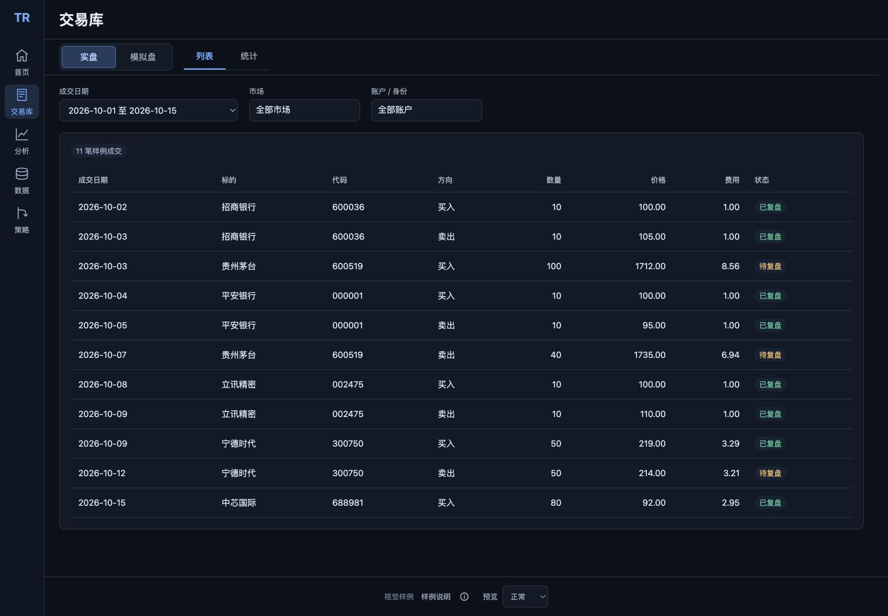


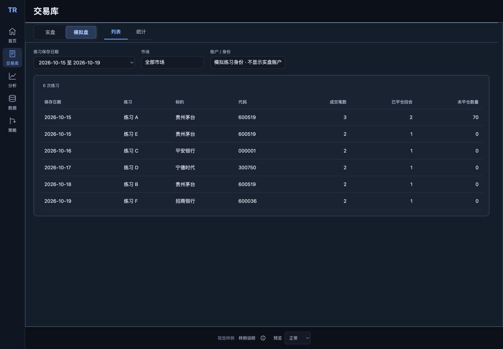

第 1 / 4 帧
原型底部的“视觉样例”工具只用于预览 normal/loading/empty 样例，不属于产品布局或正式业务控件。
说明通过指标旁的信息入口提供：hover 或 focus 打开说明，按 Esc 或点击外部关闭；入口命中区 36px，信息图标视觉尺寸 16px，说明浮层宽 280px，并在视口边缘自动调整位置，避免越界。说明入口不把长文案常驻在指标卡中。
数字显示遵循公共格式：价格保留两位小数；金额绝对值达到1万显示“万”、达到1亿显示“亿”，均保留两位小数，不增加“万亿”。详情、提示、悬停或聚焦、复制和导出都能查到完整值，缩写不改变原始数据。窄栏的占比另行按第五章换行。
三、范围、日期与搜索
进入与默认
首页入口默认进入“实盘”。来源日期、市场、账户、标的和返回上下文随入口传入，条件到达后立即生效，用户不需要再次点击应用。未传入的条件保持交易库自身范围。交易库内修改条件不回写首页，返回首页时恢复原期间、滚动位置和触发焦点。
入口、刷新和直达都按 URL 重建已生效范围；参数的完整约定见 V2.5 入口状态约定。首页只产生实盘模式，交易库内部待复盘由用户显式筛选。
切换模式与保存
交易库分为互斥的“实盘 / 模拟盘”模式。两个模式分别记忆日期、市场、账户条件、搜索、排序、页码、滚动位置和焦点；列表和统计共享当前模式的日期、市场与账户条件。切换模式不得覆盖另一模式已保存的账户选择，也不得把实盘账户作为模拟盘练习身份。这里仅约定条件的保存与恢复，不新增模拟盘账户控件或账户业务模型。
日期规则
| 日期方式 | 规则 |
|---|---|
| 单日 | 按该日筛选，包含起止日。 |
| 区间 | 按实际起止日期筛选，包含起止日。 |
| 全部 | 不限定日期范围。 |
| 本周 | 上海时区自然周，从周一开始，截至今天，包含起止日。 |
| 本月 | 上海时区自然月，从每月1日开始，截至今天，包含起止日。 |
| 本年 | 上海时区自然年，从1月1日开始，截至今天，包含起止日。 |
提交后实际起止日期必须可见。日期范围缺失或不合法时显示可修正提示，不静默换成另一个范围。
搜索与刷新
交易库内搜索是局部表内筛选，只过滤交易库表，不打开全局全屏搜索遮罩。来源范围、日期、市场和账户的条件摘要与搜索并列；摘要只作只读说明，与按钮分开显示。清空、无匹配和失败都保留工具区尺寸与位置；刷新保留当前有效条件。搜索无匹配与没有交易是两种不同空态，缺失数据不能以零代替。
截图状态对照 · 文档演示
按步骤读懂状态变化
截图状态对照 · 文档演示；按钮仅切换截图，不操作产品


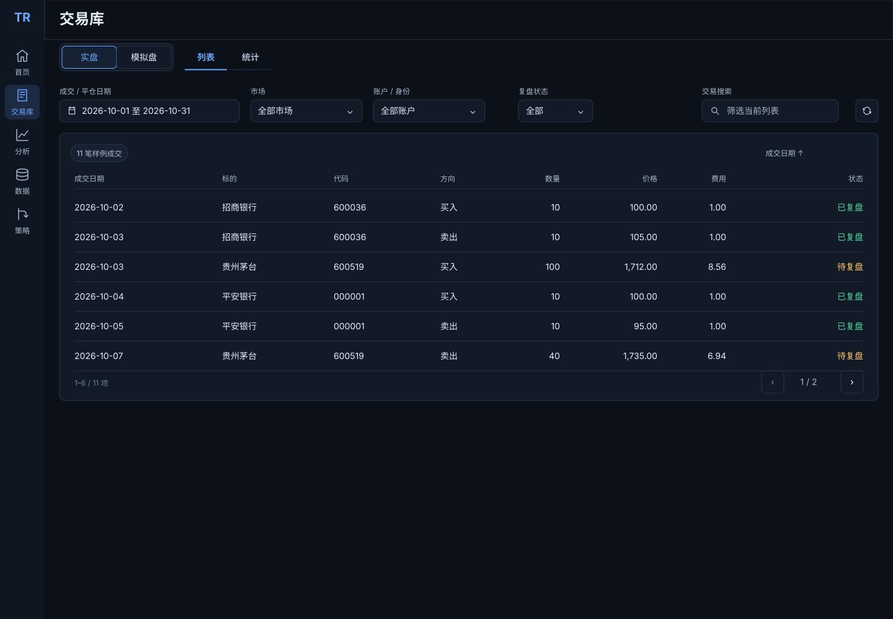
第 1 / 3 帧
普通日期入口和普通月份范围分别表达单日条件与区间条件；图内只显示已应用的来源、范围和数据，入口不默认带待复盘口径。图外 caption 负责说明触发动作、状态变化、保留项和返回位置。
交易库内部搜索沿用 V2.5 公共规范的表内筛选规则；本交易库分镜不重复摆放首页搜索图稿。
正式业务规则包括日期、搜索、刷新、返回上下文与范围重建。E 原型中的固定数据、固定 loading/empty 样例、底部“视觉样例”预览工具，以及刷新时重置为样例状态的行为，只服务于原型预览，不属于产品规则。
四、列表、练习与回合
成交是交易库中可按条件核对的买卖记录；一次练习对应一个标的，可以包含多个交易回合；回合由开仓与平仓成交按配对规则形成。同一标的同一天的多次练习仍保持独立身份；回合详情可携带范围外必要的开仓上下文，但不改变列表和统计归属。
实盘列表
实盘列表按每笔成交日期筛选，并保留未平仓成交。打开某个标的的交易后，进入既有详情容器查看该标的的回合集，不增加中间页面。关闭或返回时恢复来源列表的标的、筛选、排序、页码、滚动位置和触发焦点。
模拟盘练习列表
模拟盘以一次练习为列表入口。列表分别显示练习记录数与已平仓回合数；点击练习直接进入该练习的回合集，操作与实盘进入某个标的的回合集一致，不增加中间页面。进入回合复盘后返回，恢复原练习、筛选、排序、页码、滚动位置和焦点；同一标的的其他练习不混入当前回合集。
中途加减仓按最近开仓优先配对。例子按以下步骤计算：
| 步骤 | 成交 | 配对结果 |
|---|---|---|
| 1 | 先买100 | 形成较早的开仓量100。 |
| 2 | 再买50 | 形成较晚的开仓量50。 |
| 3 | 卖80 | 先配对较晚的50，再从较早的100中配对30。 |
| 4 | 完成配对 | 形成两回合，剩余70仍未平仓。 |
练习 A 的已平仓费用按配对数量分摊：50 股回合净值 990.00 CNY，30 股回合净值 894.00 CNY，已平仓合计 1884.00 CNY；余下70股对应的7.00 CNY开仓费用留在未平仓，不计入已平仓统计。费用说明固定为“已平仓回合的开仓分摊费与平仓费；已计入净盈亏，不含未平仓费用。”所有回合、趋势和分布图由 library-design-fixture.json 的成交配对派生。
配对不跨练习，每个有效配对算一回合；上述余70排除在已平仓回合统计之外。不要求练习另有开始或结束状态。
截图状态对照 · 文档演示
按步骤读懂状态变化
截图状态对照 · 文档演示；按钮仅切换截图，不操作产品

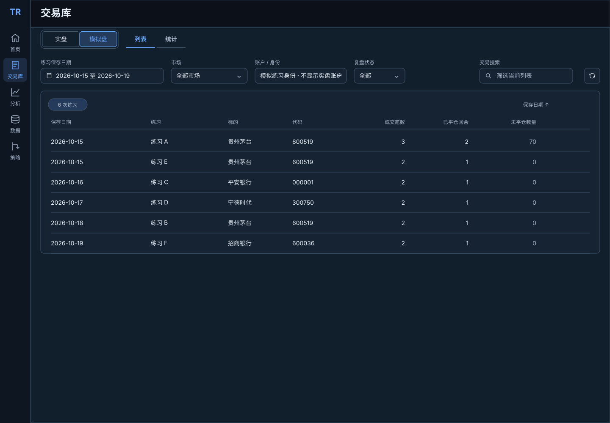

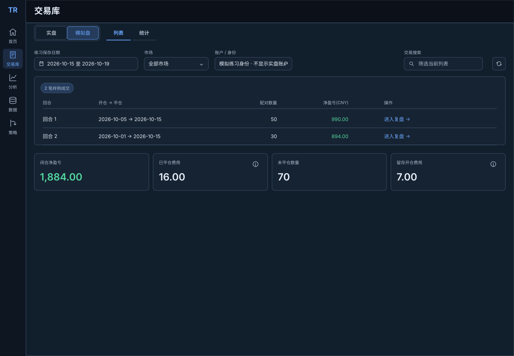

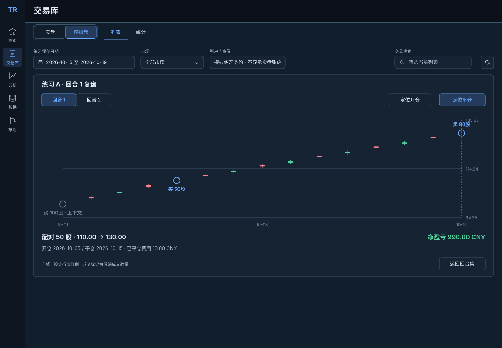

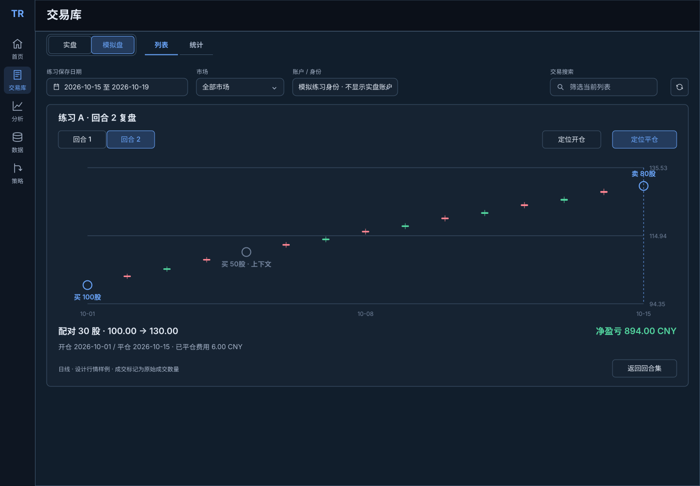

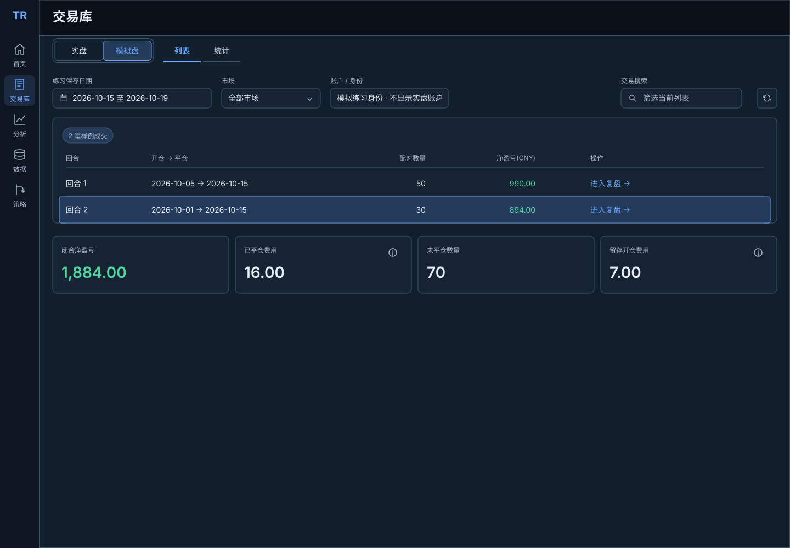

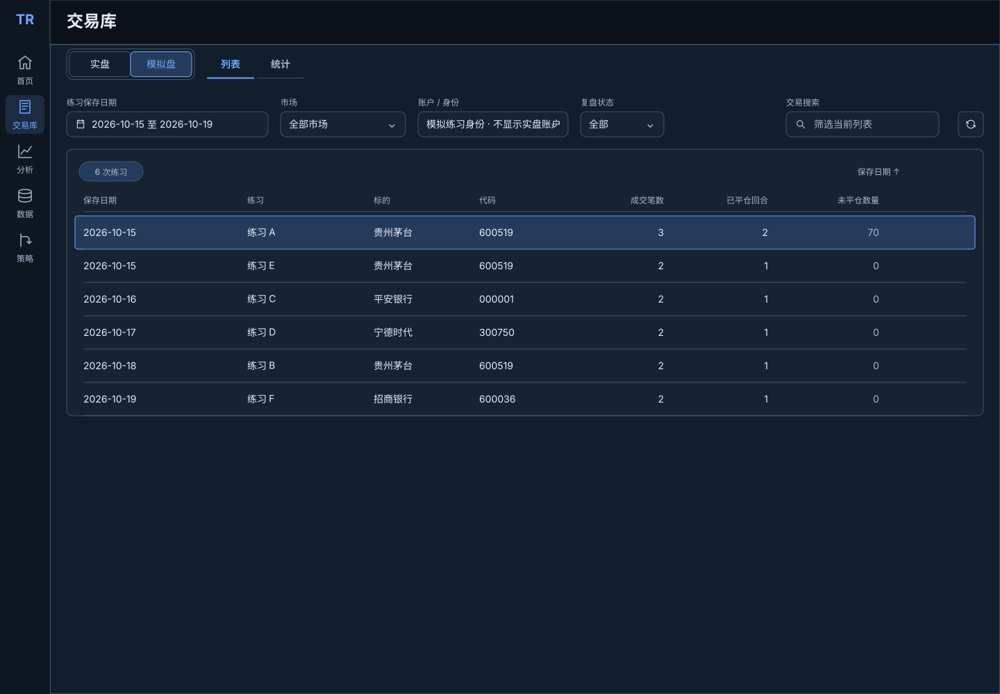

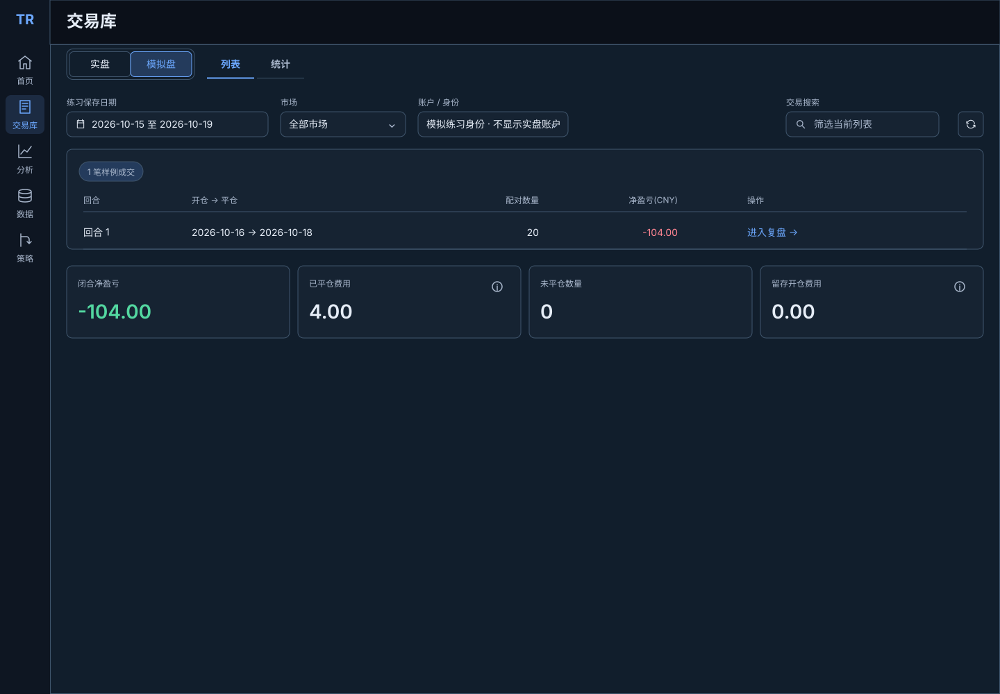

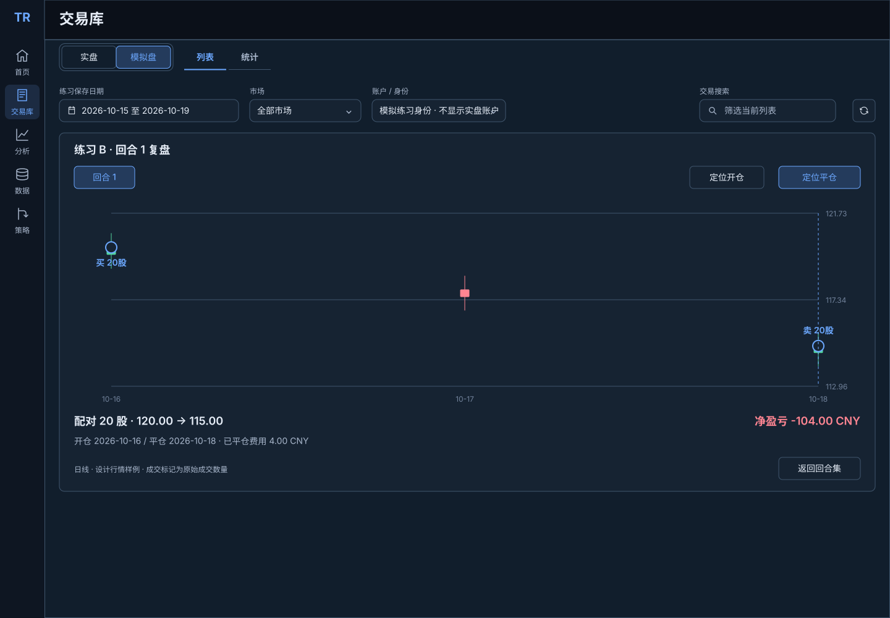
第 1 / 8 帧
五、统计与分布
本章说明统计样本的日期归属、结果指标、趋势粒度和分布下钻，实盘与模拟盘使用各自的数据口径。统计页复用趋势与盈亏分布组件。
样本与日期
| 范围 | 列表日期 | 统计日期 |
|---|---|---|
| 实盘 | 成交日 | 回合平仓日 |
| 模拟盘 | 导入文件中保存的练习日期 | 导入文件中保存的练习日期 |
统计只纳入有效的已平仓回合，未平仓成交仍保留在实盘列表。模拟盘使用文件中保存的练习日期，不以行情日期替代；普通模拟盘统计分镜样例覆盖五个保存日期，实际趋势按当前范围内的有效数据展示，并保留同一标的同日练习的独立身份。
指标与结果口径
扣费后收益大于0为盈利、小于0为亏损、等于0为持平。总体胜率与方向胜率的分母都包含持平回合，平均盈利和平均亏损不含持平回合。方向只取开仓方向明确标记的 long / short；未知方向排除并单独报告，不能把平多的卖出成交推断为做空。当前模拟盘设计样例有7个有效回合、5个盈利做多回合，做空显示“— / 无样本”。缺失值显示破折号并明确不可计算，不把缺失混入完整分布。模拟盘统计按两行四卡展示：有效回合、净盈亏、总体胜率、费用（已扣除）；做多胜率、做空胜率、平均盈利、平均亏损。费用卡短标签为“费用（已扣除）”，完整费用说明通过指标旁的信息入口按 BT02 的 hover/focus 规则展开。
风险指标显示“最差练习回撤”。
- 含义与选取范围：每次练习使用当前模拟盘筛选与保存日期独立选取，沿自身完整权益轨迹计算；轨迹含初始资金、开仓后按标记价格计价的浮动盈亏和费用。汇总取所有有效练习的单练习最大回撤中的最大值。短说明为“所选练习中，单次练习权益最大回撤的最大值。”
- 计算方式：初始权益必须为正，权益样本必须完整有序且估值/费用范围一致。
peak_t=max(E_0…E_t)，DD_t=(peak_t−E_t)/peak_t，单练习 MDD 为max_t DD_t；分母是截至该时点的最高历史权益。 - 数据不足如何显示：缺少初始值、路径或估值、存在未调整外部现金流时，该练习不可用。全部有效才显示数值，部分有效显示“— · 可计算 N/M 练习”；空样本显示“— / 无练习”；完整有效且为零显示“0.00%”。当前样例缺少逐时权益，显示“—”并说明“暂不可计算”。不把累计净盈亏曲线冒充权益回撤。
独立算例：权益 100 → 120 → 90 的单次练习回撤为25%；另一练习 100 → 110 → 99 为10%；汇总为25%。若第二条练习缺少路径，则显示“— · 可计算 1/2 练习”。
趋势粒度
日期跨度不超过31天按日展示，超过31天且不超过两年按月展示，超过两年按年展示。粒度随当前统计范围确定。
分布与下钻
每个区间使用横向条形图表达频数：左侧为区间名称，中间为共享最大回合数尺度的条形，右侧显示回合数和占比，轴标为“回合数”。零样本不绘制最小假条，亏损区间仍使用正向频数宽度。加载显示等待占位，空态没有条形并说明没有有效样本；计算输入缺失时排除无效回合并明确当前分母。收益率/金额切换沿用既有区间边界。展开区间明细只展示该区间回合，不改变分母、不改变顶部条件，也不重算原分布；点击回合进入复盘，返回后恢复原区间与列表位置。分布面板自身不分页，真实回合明细表仍保留分页。
实盘普通统计
截图状态对照 · 文档演示
按步骤读懂状态变化
截图状态对照 · 文档演示；按钮仅切换截图，不操作产品

第 1 / 1 帧
模拟盘普通统计
截图状态对照 · 文档演示
按步骤读懂状态变化
截图状态对照 · 文档演示；按钮仅切换截图，不操作产品

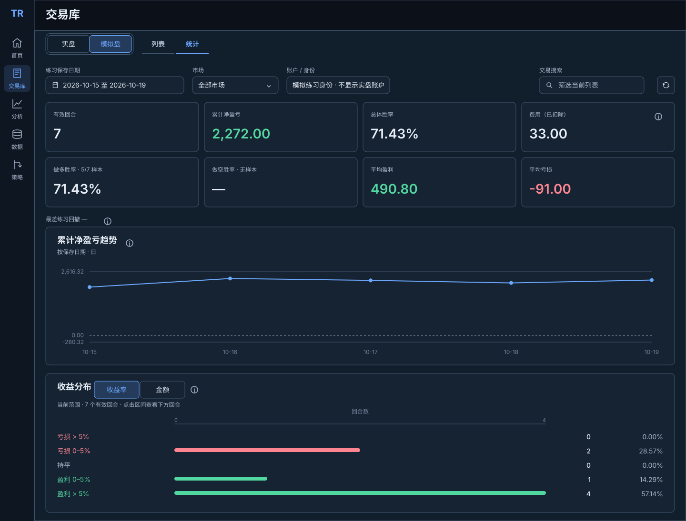
第 1 / 1 帧
金额切换、下钻与返回
截图状态对照 · 文档演示
按步骤读懂状态变化
截图状态对照 · 文档演示；按钮仅切换截图，不操作产品

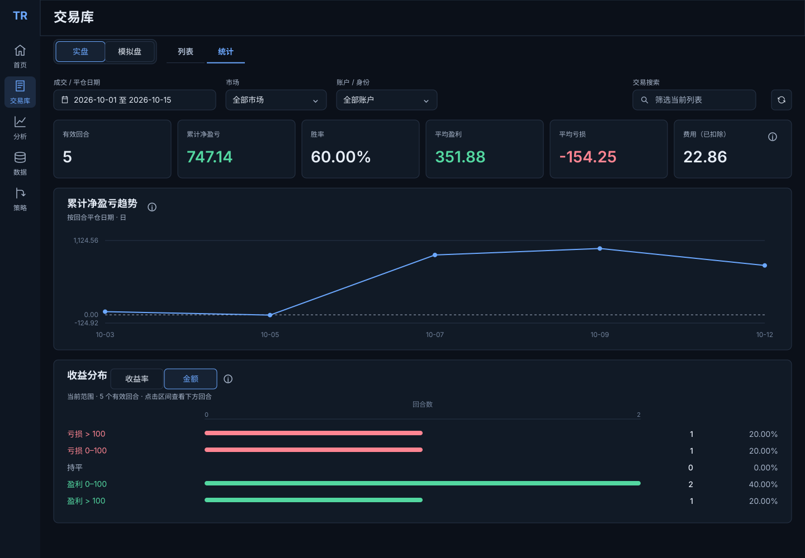

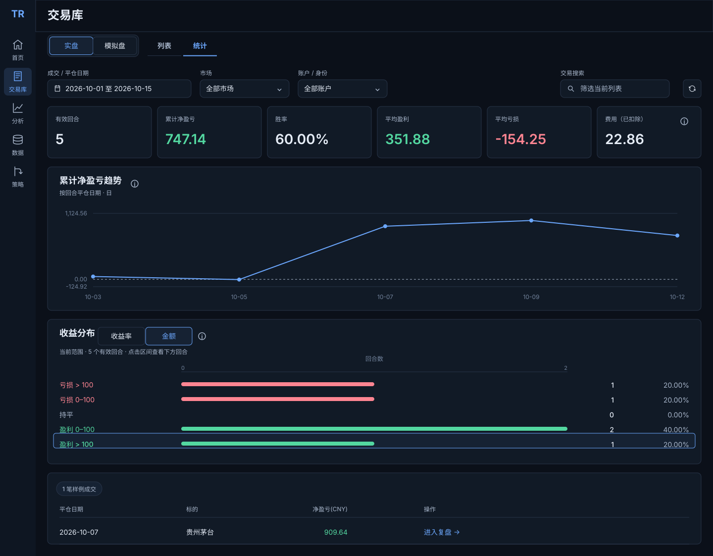

第 1 / 3 帧
趋势边界与粒度
截图状态对照 · 文档演示
按步骤读懂状态变化
截图状态对照 · 文档演示；按钮仅切换截图，不操作产品

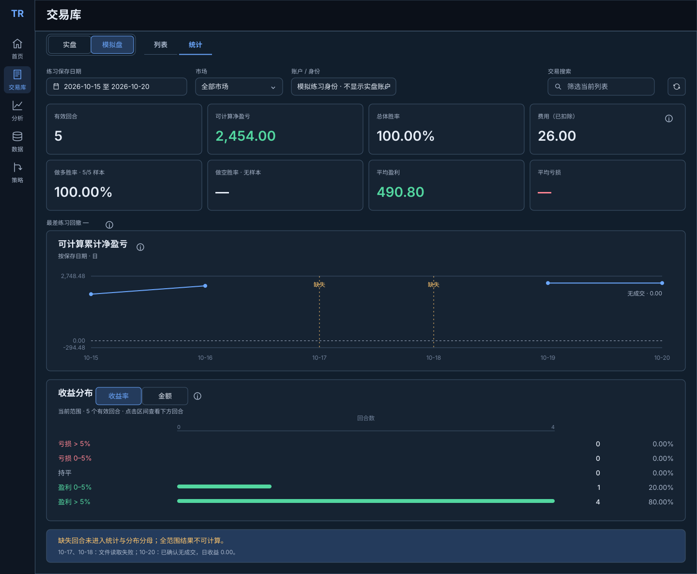

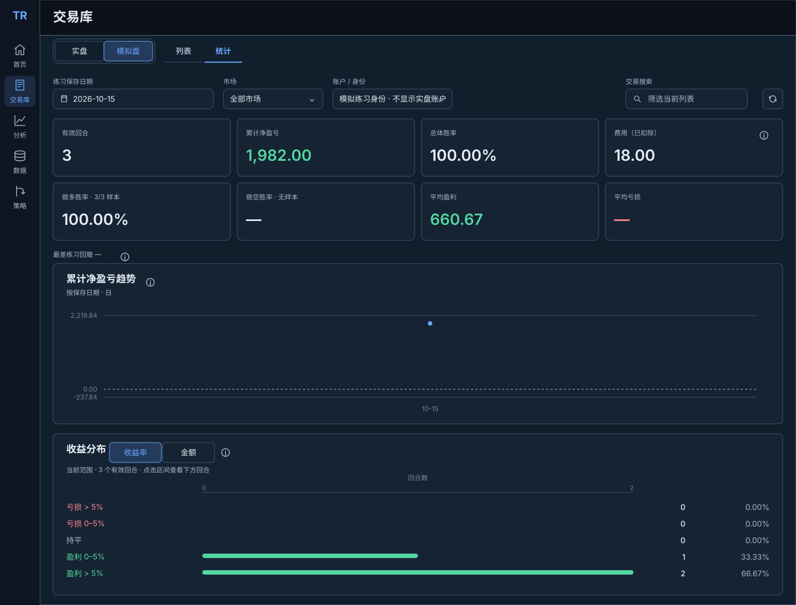

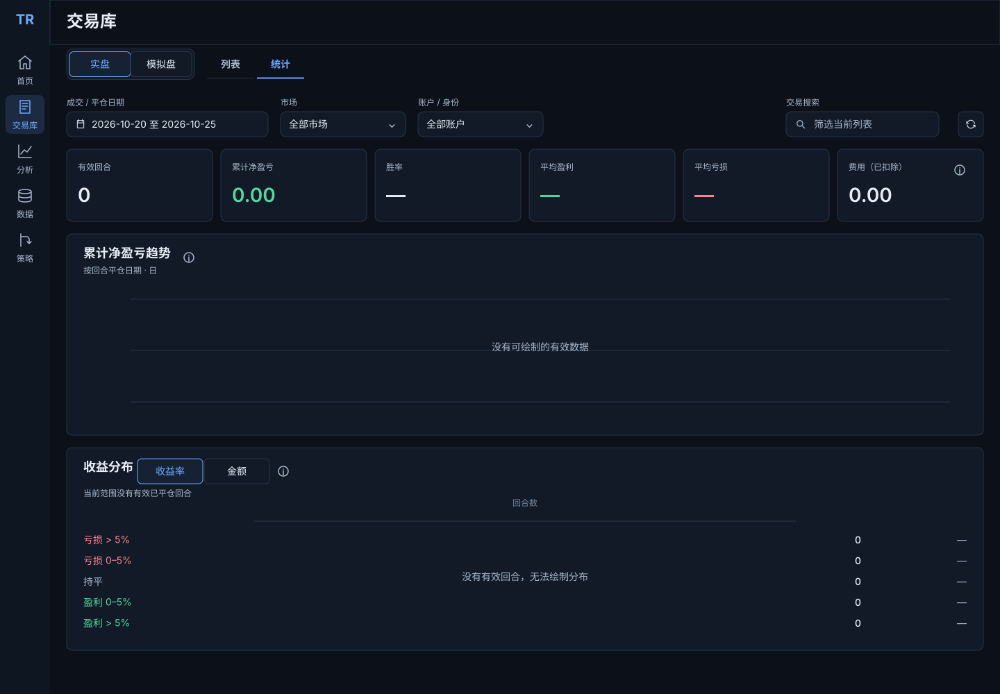


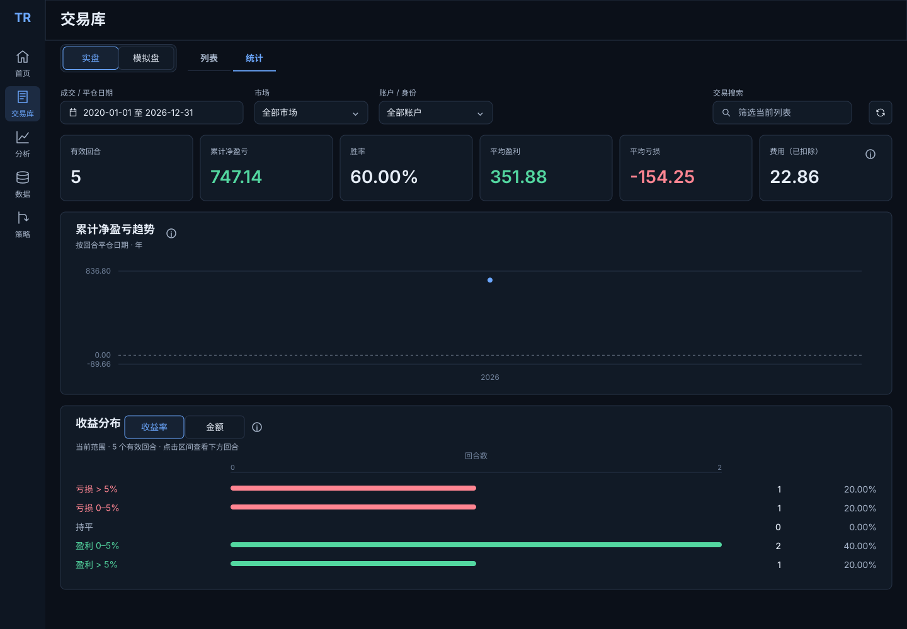
第 1 / 5 帧
六、查看详情、进入复盘与返回
这一章按用户从来源页面进入交易库、打开对象、完成回合复盘并逐层返回的旅程说明页面如何交接条件和恢复位置。
| 阶段 | 用户动作 | 界面与返回结果 |
|---|---|---|
| 首页日期点 | 打开日期详情后点击查看交易 | 进入实盘，应用首页传入的范围；来源日期、市场和账户立即生效，无需再次应用。 |
| 普通交易库入口 | 打开交易库入口 | 进入实盘，应用首页传入的范围；入口不携带待复盘口径。 |
| 库内待复盘筛选 | 在交易库内显式选择待复盘 | 保持来源条件；完成复盘后能在交易库内核对筛选结果变化。 |
| 实盘列表 | 打开某个标的的交易 | 在既有详情容器内查看该标的的回合集，不增加中间页面。 |
| 模拟盘列表 | 切换到模拟盘并打开一次练习 | 直接显示这次练习的回合集，同标的的其他练习不混入。 |
| 回合集 | 选择一个回合进入复盘 | 携带该回合及必要的开仓上下文；范围外上下文不改变统计归属。 |
| 回合复盘 | 关闭或返回 | 恢复原回合集、标的或练习、筛选、排序、页码、滚动位置和触发焦点。 |
| 回合集返回 | 返回来源列表 | 恢复原标的/练习在来源列表的位置与状态，并保留筛选、排序、页码、滚动位置和触发焦点。 |
| 交易库返回首页 | 通过全局侧栏回到首页 | 恢复首页原期间、贡献模式、表格状态、滚动位置和触发焦点；顶部不提供独立“返回首页”动作。 |
返回字段按来源保存如下：
| 来源 | 恢复字段 |
|---|---|
| 交易库列表、标的或练习 | 标的或练习身份、日期、市场、账户、搜索、筛选、排序、页码、滚动位置和触发焦点。 |
| 首页日期或普通入口 | 原期间、市场、证券、日期、账户、附加筛选、表格状态、排序、页码、滚动位置和触发焦点。 |
| 首页贡献下钻 | 贡献模式，以及当前期间和历史已平仓两种模式各自的分类、排序、下钻、页码；同时恢复市场、证券、日期、账户、筛选、滚动位置和触发焦点。 |
若刷新导致原标的消失，焦点回到来源容器标题并保留仍有效的条件；不能从泛化“进入贡献”按钮直接跳到固定证券详情。
顶部取消“返回首页”入口只表示 E 顶栏不再放置这一个全局动作，不取消详情、回合集和复盘的逐层返回。用户回到首页时通过全局侧栏恢复来源；详情链路仍按上表逐层返回并恢复触发上下文。
截图状态对照 · 文档演示
按步骤读懂状态变化
截图状态对照 · 文档演示；按钮仅切换截图，不操作产品


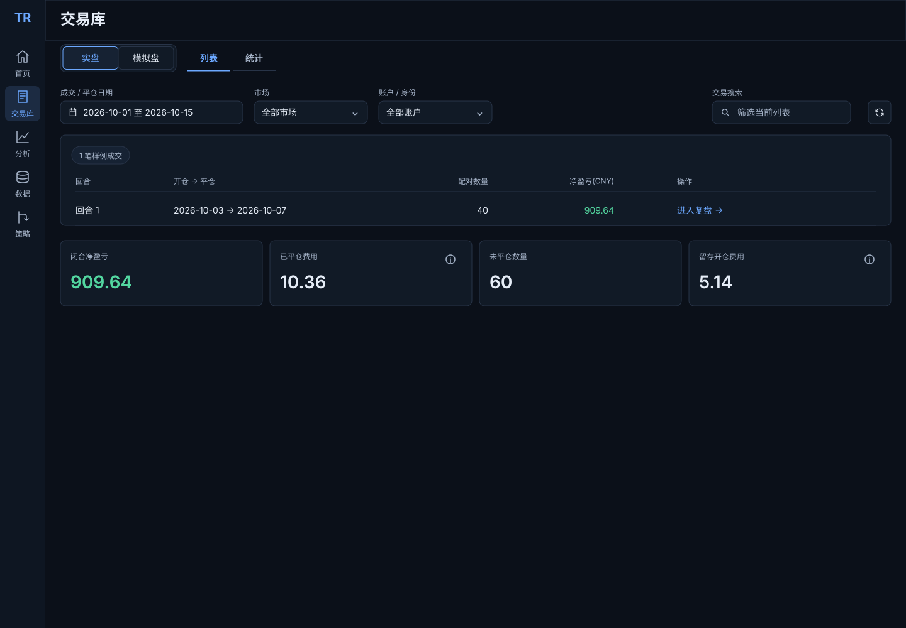

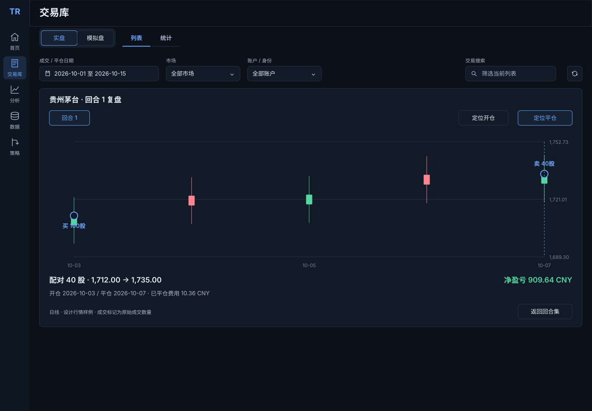

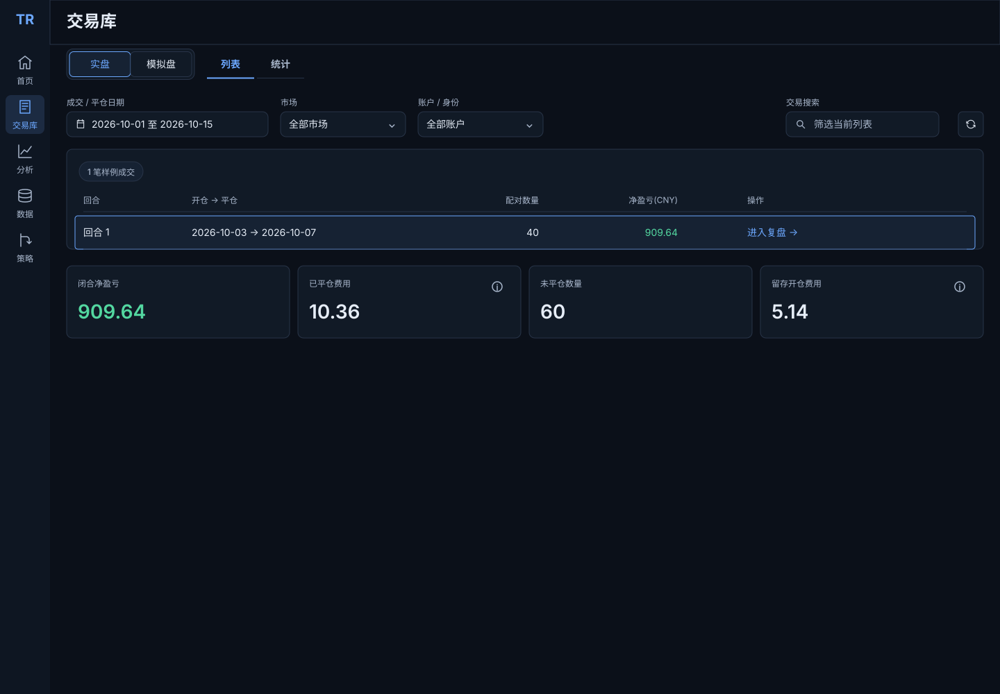


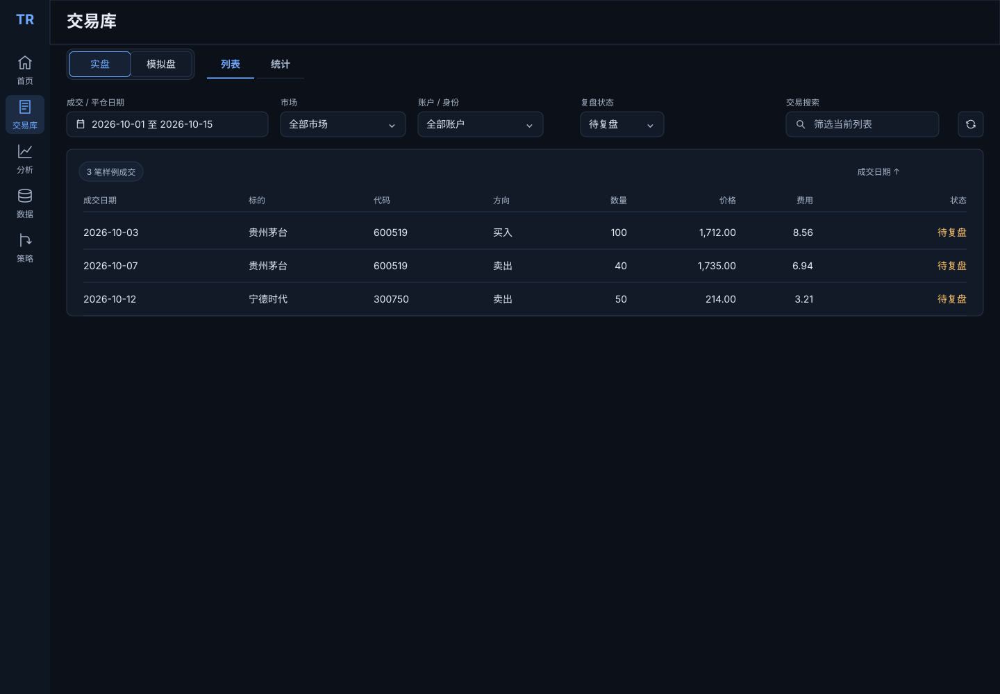


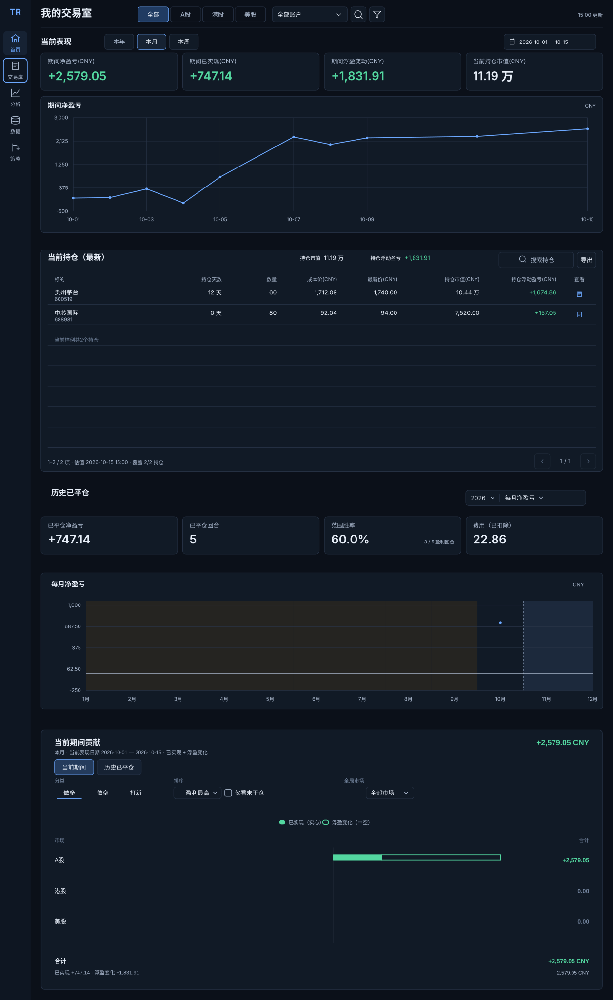

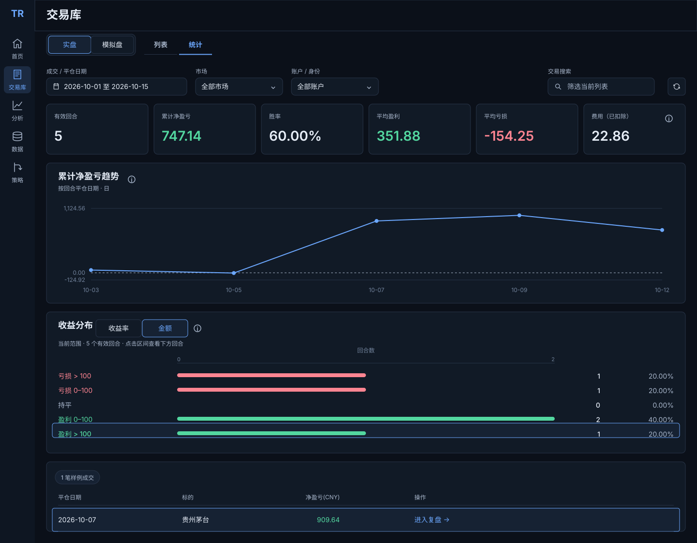
第 1 / 14 帧
本组分镜的共享来源快照为：首页本月 2026-10-01—2026-10-15、全部市场/账户、贡献模式“当前期间 / 做多 / 盈利最高”、滚动起点0；实盘列表保留该范围，成交日期升序、空搜索、第1页、每页6笔。选择贵州茅台后在回合集与复盘中保持同一来源，返回逐层恢复回合/成交行焦点；首页返回通过全局侧栏恢复原交易库入口焦点，不新增顶部返回首页按钮。模拟盘保存日期范围独立为2026-10-15—2026-10-19，保存日期升序、空搜索、第1页、每页6次练习。两个模式的条件分别存储。
待复盘是显式的成交复盘状态，与是否留仓无关。样例待复盘为茅台买100股、卖40股和宁德时代已平仓卖50股；中芯国际尚有80股持仓但已复盘，因此不在待复盘结果中。
首页估值使用设计行情样例，时点为2026-10-15 15:00 Asia/Shanghai，人民币原币、汇率1，覆盖全部2个持仓。期初无仓位、浮盈为0；期末茅台60股报价1740、中芯80股报价94，持仓市值111920.00。留存开仓费用计入持仓成本，期末浮盈1831.91；已实现747.14，期间净盈亏为2579.05。主趋势逐日用当日已实现加当日浮盈计算，具体报价输入见library-design-fixture.json；图中万/亿缩写可通过金额标题提示查完整值。复盘K线同属设计行情样例，标记为原始成交数量，配对数量另列于图表下方，不把配对部分当作原成交。
入口帧和到达帧的职责分开：入口帧的导航按钮负责进入普通交易库；到达帧显示已生效条件和交易列表，不再要求重复点击“进入交易库”。待复盘分镜只表达交易库内的显式筛选，不代表首页入口或默认队列。首页 V2.5 只展示普通入口帧，交易库 V1.1 展示完整到达、列表、回合、复盘和返回链路。
七、异常状态
异常状态按情况、呈现和保留与恢复区分；没有交易、搜索无匹配、没有已平仓回合、数据缺失和计算输入缺失分别表达，不能将它们合并为零。
| 情况 | 呈现 | 保留与恢复 |
|---|---|---|
| 首次加载 | 标题、工具区、表头和行槽使用最终尺寸占位。 | 保留工具区、表头和结果区尺寸与位置。 |
| 已有数据后台更新 | 显示上一组完整有效数据，并说明正在更新。 | 保留旧范围和有效值。 |
| 更新失败或超时 | 说明新范围未应用，并提供按原筛选条件重试。 | 保留旧范围和上一组有效值。 |
| 没有交易 | 显示“没有交易”的独立空态。 | 保留当前范围和工具区。 |
| 搜索无匹配 | 显示“当前搜索无匹配”的独立空态。 | 保留搜索词、范围和工具区尺寸与位置。 |
| 没有已平仓回合 | 显示没有已平仓回合的空态，不生成虚构回合。 | 保留日期、模式和统计结构。 |
| 数据缺失 | 显示“—”或“不可计算”，不伪造零值。 | 保留可用字段和原范围。 |
| 计算输入缺失 | 显示“不可计算”或破折号，不纳入完整分布。 | 保留其他可计算样本。 |
| 读取失败 | 显示可恢复错误和重试动作。 | 保留原筛选条件。 |
| 连续切换范围 | 只应用最后一次仍有效的选择；迟到旧请求不得覆盖新选择。 | 保留最后一次仍有效选择的范围和结果。 |
| 非法市场参数 | 显示参数提示，市场回到 all。 |
保留可用的其他条件。 |
| 非法或不完整范围参数 | 显示可修正提示，不能静默扩为全部。 | 具体回退规则待规格明确。 |
| 账户等缺少已确认默认值的参数 | 显示参数错误，不伪造默认值。 | 具体回退规则待规格明确。 |
截图状态对照 · 文档演示
按步骤读懂状态变化
截图状态对照 · 文档演示；按钮仅切换截图，不操作产品

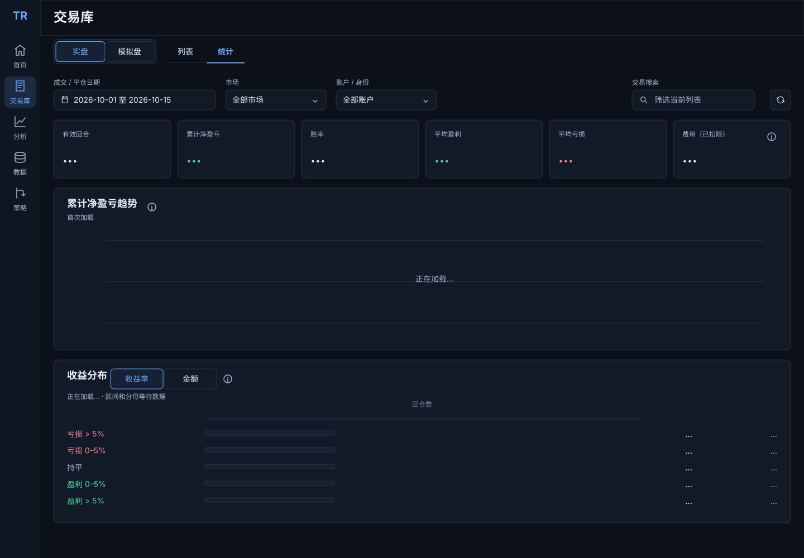


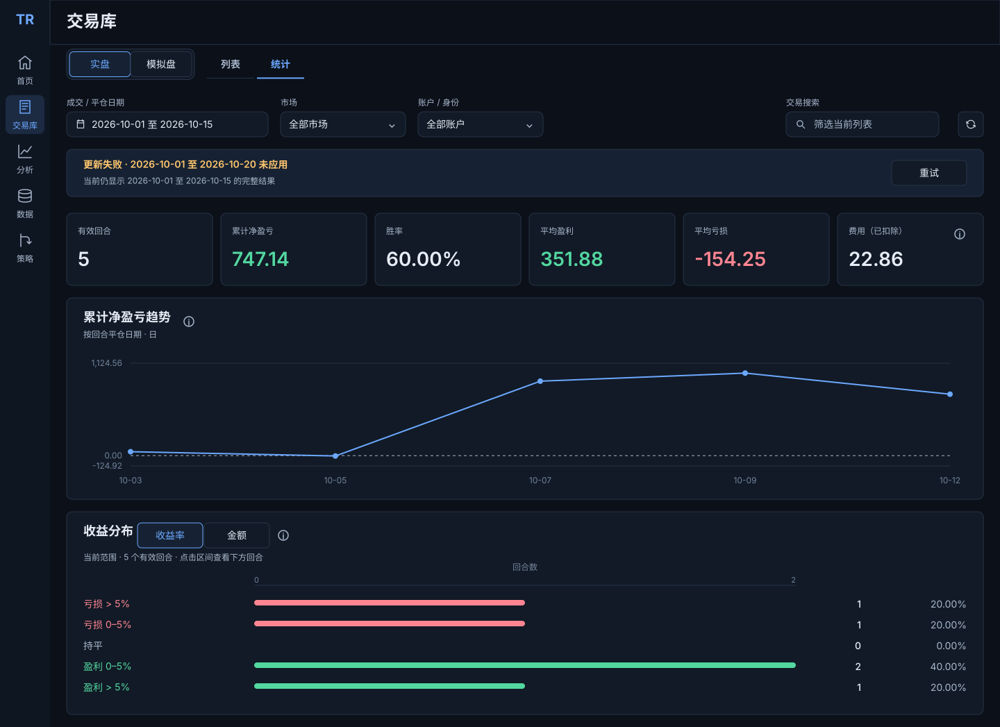

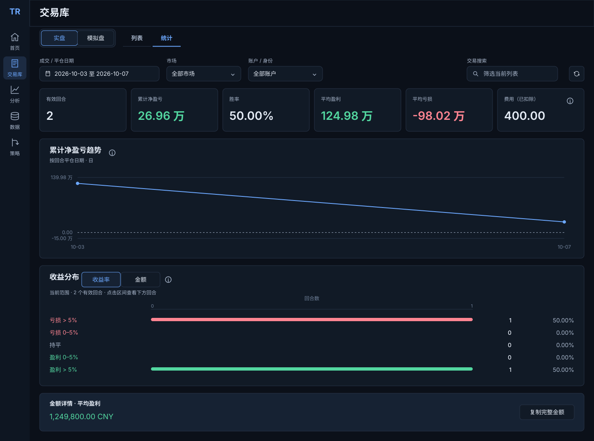

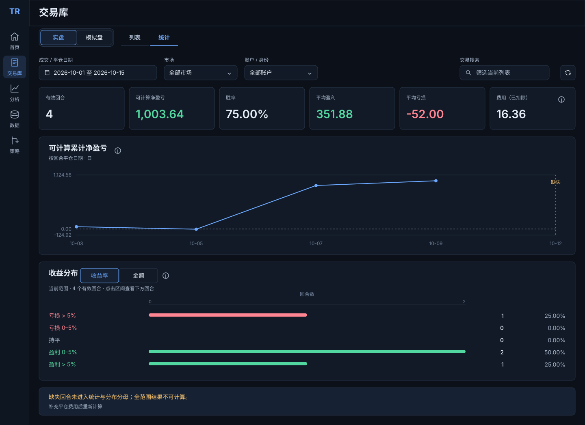
第 1 / 5 帧
八、组件复用与职责
交易库按公共、组合、业务和容器四层使用组件。公共层沿用 V2.5 的外观、状态、命中区、动效和基础视觉；组合层组织交易库页面；业务层承载第三至七章的条件、练习、回合、统计和异常规则；容器层承载详情、回合集、复盘及返回上下文。第二章负责布局和尺寸，本章不重复定义。
| 层级 | 职责与边界 |
|---|---|
| 公共组件 | 保证交易库与全站控件状态、命中区和视觉基础一致，不另行设计公共外观、尺寸或状态顺序。 |
| 组合组件 | 把条件工具区、实盘/模拟盘模式、列表、统计、局部表内筛选、练习与回合集入口、分布下钻组合为页面阶段。 |
| 业务组件 | 表达来源条件立即生效、配对、日期口径、收益分类、显式待复盘筛选和逐层恢复等规则；不增加无依据中间页或模拟盘账户模型。 |
| 容器组件 | 复用既有交易详情容器、回合集和回合复盘，恢复日期、筛选、标的/练习入口、焦点和滚动位置；不新增双栏容器。 |
公共技术名称按类别列出，具体使用位置见第二至七章。
| 类别 | 公共组件名称 |
|---|---|
| 基础操作 | IconButton、SegmentedTabs |
| 选择与浮层 | Select、Popover、FilterPopover |
| 状态与标记 | Token、StatusBadge |
| 数据展示 | DataTable、Metric、ChartTooltip |
| 空态与恢复 | EmptyState、RetryAction |
九、实现验收
静态分镜说明设计预期，不证明产品实现已经完成。功能、状态与持久化、视觉验收分别记录可观察结果，任何一项未验证都不能写成通过。
功能验收
- 从首页日期点和普通交易库入口进入，确认来源条件立即生效；在库内显式选择待复盘，确认结果只在库内出现。
- 分别进入实盘标的、模拟盘练习、统计区间和回合复盘，确认列表、练习、回合、日期口径、配对、分布下钻和逐层返回符合本方案。
- 验证搜索只过滤交易库表，清空、无匹配、刷新、失败、重试和非法参数提示都保留正确的工具区与范围语义。
状态与持久化验收
- 在隔离数据库中完成一次回合复盘，返回、刷新并重新打开，确认日期、模式、账户、列表或练习、回合、区间、排序、页码、滚动位置和焦点仍一致。
- 检查后台更新、连续请求、迟到结果、空态、缺失和重试；旧有效结果不能被失败请求覆盖，缺失值不能变成零。
- 写入验收不得改变原始交易数据，并记录隔离数据库、请求范围和恢复字段的实际结果。
视觉验收
- 使用批准视口和相同导航、数据状态对照真实页面，按第二章检查布局层级、工具区职责、表格列对齐和返回焦点。
- 检查价格两位小数、金额“万/亿”阈值与完整值可查、占比两位小数、窄栏换行，以及没有交易、无匹配、无已平仓回合、错误、极端和缺失状态的独立呈现。
- 功能、数据持久化、真实页面行为和同状态视觉比较分别记录结果；静态图、DOM存在或 HTTP 成功不能替代视觉证据。
十、来源映射、历史与未决项
本章集中记录来源迁移、实现引用和历史边界；历史版本与候选方案只用于追溯，当前验收以本正文和分镜为准。
| 来源 | 当前章节 | 图稿或保留主题 |
|---|---|---|
| HP06 | 第一章、第三章、第六章 | 日期入口、普通交易库入口、条件立即生效、详情与首页返回；保留 handoff、journeys-date、journeys-library-entry、library-return、hcr06-final-*。 |
| V1.1 E 布局与条件 · V1.0 业务正文 | 第二章至第五章 | E 负责 64px 顶栏、72px 五项侧栏、58px 二级栏和列表/统计相邻；V1.0 业务正文继续负责条件记忆、自然日期和上海时区、日期口径、练习与回合、收益与统计规则。 |
| V1.0 工具区与搜索 · V1.1 E 原型 | 第二章、第三章 | V1.0 业务规则负责局部表内筛选、搜索220px、刷新36×36px、间隔28px、条件摘要、日期/年份图标边界；E 只替换定型布局和表面。 |
| V1.0 从入口到回合再返回 · V1.1 E 原型 | 第六章 | V1.0 负责日期→实盘、实盘标的→回合集、模拟练习→回合集、回合复盘→逐层返回和上下文恢复；E 负责当前导航表面，首页通过全局侧栏恢复来源。 |
| V1.0 练习到回合分镜 · V1.1 E 原型 | 第四章 | hcr06-final-sim-ab、hcr06-final-rounds-a、hcr06-final-replay-a1/a2/b1，共用整页母版并保留练习、回合和复盘身份。 |
| V1.0 统计与分布分镜 · V1.1 E 原型 | 第五章、第七章 | V1.0 业务分镜承载粒度、收益率/金额、2位小数、固定分母、区间展开、返回位置和异常状态；E 作为当前四个主状态的视觉定型参考。 |
| 设计样例边界 | 第三章、第五章 | journeys-date-month、journeys-trend-gap、journeys-trend-single、journeys-trend-empty；有效日期由固定样例派生，缺失不补零。 |
实现约定
| 实现约定 | 依据 |
|---|---|
普通入口不带 queue 或 pending-review；待复盘只由交易库内显式筛选进入。 |
V2.5 入口状态约定；正文用户旅程见第六章。 |
刷新和直达按 URL 重建范围；非法市场回 all 并提示；非法或不完整范围显示可修正提示，不能静默扩为全部。 |
V2.5 入口状态约定。 |
| 账户参数必须显式传递；未定义的账户默认值继续待明确。 | V2.5 入口状态约定。 |
已确认决定
- 2026-10-22 用户确认“首页取消独立待复盘入口，统一进入交易库”。当前正文使用普通交易库入口；原待复盘数量分镜仅作历史来源，并保留交易库内显式待复盘筛选的依据。
- 2026-10-24 用户确认采用方案 E，以及“最差练习回撤（推荐）”。正文、冻结的四个主状态参考、共享分镜和指标说明均按此决定更新。
待确认项
| 问题 | 当前处理 | 依据 |
|---|---|---|
| O02 状态徽章使用24px高，还是20px高并采用自适应宽？ | 当前沿用24px高；20px高、自适应宽方案继续待确认。 | O02 视觉验收项。 |
| 日期、账户等未明确默认值是什么？ | 记录为规格待明确，不自行决定回退值，也不把缺少参数静默解释为全部范围。 | V2.5 入口状态约定与现有业务规则。 |
历史承接自 V1.0 冻结的首页交易库业务与分镜；source/generate-library-frames.py 以固定设计样例生成完整状态图，handoff 与 library-return 均包含首页宿主可见区域，局部 journeys-library-entry.svg 只作为历史参考。冻结评论与迁移依据见 V1.0 拆分评论记录。